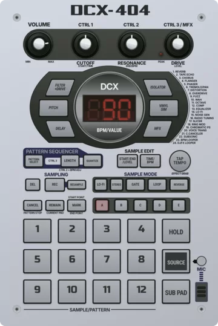
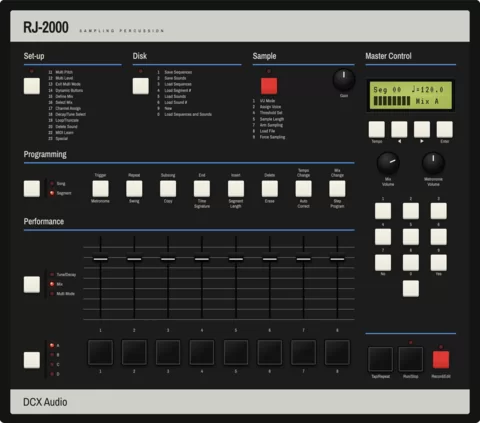
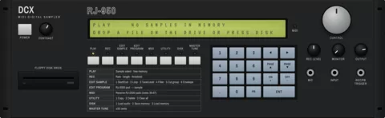
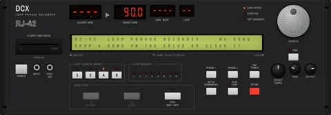
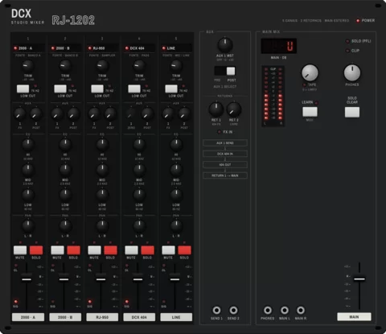

O rack completo, aberto num clique.
- RJ-2000, DCX 404, RJ-950 e RJ-42 no mesmo painel.
- O mixer RJ-1202 junta tudo, com envio para efeitos.
- As máquinas conversam entre si: tempo e áudio.
- Abre e toca, sem instalar nada e sem conta.
Grátis, código aberto e sem conta. Abre e toca, sem instalar nada.

samplers, looper e mixer
de estilo clássico
Cada máquina segue o painel e o fluxo do hardware que a inspirou.




Mixer de mesa do Studio, com envio para efeitos.
Três passos, nenhuma instalação.
Tudo é código aberto (GPLv3). Dá para ler, aprender fuçando e contribuir.
A DCX Audio faz máquinas de áudio de estilo clássico que abrem no navegador. É um projeto de oficina, de Duque de Caxias, no Rio de Janeiro. Painel fiel ao hardware que inspirou cada uma, código aberto e de graça.